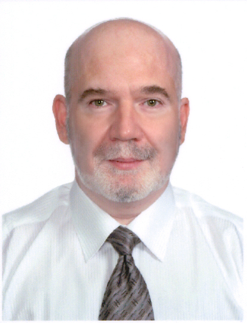

| Имя: |
Сергей Владимирович Мусенко |

|
| Адрес: |
Украина, город Киев |
| Телефон: |
+38 067 4965296 |
| Telegram: |
@sergeymusenko |
| E-mail: |
sergey@musenko.com |
| Github: |
sergeymusenko |
| Поиск должности:
|
технический директор,
системный архитектор,
лидер группы программистов,
программист Python/PHP/JavaScript,
системный администратор
|
| Образование: |
Московский Авиационный институт,
факультет космонавтики,
инженер-механик по космическим летательным аппаратам. |
| Квалификация: |
Работа в компьютерной индустрии более 30 лет.
Отличные навыки программирования и самообразования. Большое внимание к деталям.
Высокий уровень самомотивации.
Хорошее представление о современных технологиях программного и аппаратного обеспечения компьютера.
Опыт работы лидером группы программистов.
Опыт работы на должности IT директора.
Отличные навыки общения и лидерства. Энергичен, положителен.
Опыт сотрудничества с компаниями из США, Великобритании, Германии, Норвегии, Израиля.
Разговорный английский.
|
| Навыки работы: |
Python, PHP, SQL, JavaScript, HTML, CSS и более.
|
| |
Важные навыки:
Telegram: Bots, Payments, TWA;
опыт интеграции PayPal и более 25 других платежных систем;
x
Опыт интеграции платежных систем:
☑ 1stPayments.net
☑ 2CheckOut
☑ AlertPay
☑ Authorize.net
☑ CashEnvoy
☑ Certopay
☑ CoinPayments.net
☑ Directa24
☑ Durango
☑ FirstAtlanticCommerce
☑ FlutterWave
☑ Gate2Shop
☑ PaymentWall
☑ PayPal
☑ PayStack
☑ PayStack
☑ RavePay
☑ RavePay
☑ SWREG
☑ WellsFargo.com
☑ WireCard
Linux Administration (Debian/Ubuntu);
MySQL, PostgreSQL, Sybase, Oracle;
Adobe PhotoShop
|
Сертификаты:
|
PHP,
JavaScript (Master Level),
HTML,
C++,
Linux Administration,
Computer Technical Support,
Windows Administrator,
MS Word.
|
| Участие в проектах: |
Описание основных проектов:
• 2001-2016, Web-сайты и Интернет-проекты
• 2001-2005, проекты WAP, SMS
• 1991-2002, проекты C++ и прочие проекты
|
| Опыт работы: |
С 2017: глава отдела разработки в лотерейной компании, Израиль (NDA).
Создание, поддержка и редизайн web-сайтов, API сайтов-партнеров, платежные системы, рассылки SMS/email, аффилятные программы, анализ данных и прогноз.
Progressive Web App, Telegram Web App, Telegram Bots.
Dev Team Lead,
Удаленная работа.
2015 - 2016: глава отдела разработки, ООО Smile-Expo, Киев.
Создание, поддержка и редизайн web-сайтов выставочной тематики.
Dev Team Lead.
2005 - 2015: частный предприниматель, г. Киев.
Системный архитектор в крупной Интернет-компании (NDA).
Создание web-сайтов, системы обработки информации в Интернете,
системы электронной коммерции,
системы управления контентом,
web-дизайн, администрирование серверов (Linux).
Частный предприниматель.
2004: Филиал "СП Селлайн", г. Киев.
Руководство разработками проектов мобильного Интернета и
web-разработками. Администрирование Интренет-серверов (Linux) и
локальной сети офиса (Linux+Windows), администрирование серверов баз
данных (Sybase, MySQL). Программирование (Python, PHP).
Технический директор компании.
2001 - 2003: ЗАО "Gala.Net", г. Киев.
Web-сайты, административные интерфейсы сайтов, баннеры рич-медиа,
Интернет-программирование, приложения под Linux, Web дизайн, графика,
мобильный Интернет, WAP сайты, логотипы и мелодии для мобильных телефонов.
PHP, Python, Perl, C++, HTML, JavaScript, CSS, SQL (Sybase, PostgreSQL).
Программист.
1998 - 2000: ЧП "БАС", г. Сумы.
Разработка финансового и бухгалтерского программного обеспечения.
LAN администрирование, MS SQL Server, Web design, Borland C ++ Builder 5.0, Delphi 5.0, Clipper 5.02, Assembler, CorelDraw, MS Office.
Программист.
1995 - 1998: ТОО "Ярославна", г. Сумы.
Бухгалтерское программное обеспечение: проектирование, внедрение и обслуживание клиентов.
LAN администрирование, FoxPro, Clipper, Borland Turbo C 3.0, CorelDraw.
Программист.
1994 - 1995: ТОО "Максима", г. Москва.
Разработка проектов баз данных и обработки графической информации. Рекламирование продукции.
Borland Turbo C 3.0, CodeBase, Windows API, CorelDraw.
Программист.
1991 - 1993: частный предприниматель, г. Сумы.
Программное обеспечение для бухгалтерии и медицины: разработка, внедрение, продажа и обслуживание клиентов.
MS DOS Device Driver, программы защиты от копирования, FoxPro, Clipper, Borland Turbo C 3.0, Assembler.
Программист, частный предприниматель.
1989 - 1993: предприятие "ЧП ВТИ", г. Сумы.
Программное обеспечение для бухгалтерии: разработка, внедрение и обслуживание клиентов.
FoxPro, Borland Turbo C, Assembler.
Программист.
1985 - 1989: студент кафедры автоматизации проектирования,
Московский Авиационный Институт, Москва.
Автоматизация проектирования космических аппаратов.
Fortran, IBM 370 VMS.
Программист.
|
| Дополнение: |
Имею загранпаспорт, водительские права.
Посещал страны США, Голландию, Испанию, Францию, Германию, Чехию, Польшу.
Не курю, больничными листами не пользуюсь.
В экстренных случаях доступен 24/7
|
| Хобби: |
Сальса, Айкидо, фото, автомобили Mercedes Benz. |
|